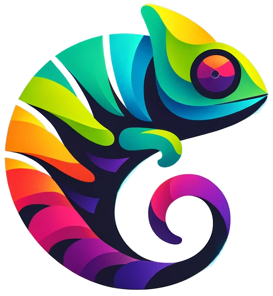

Um sistema robusto para visualização interativa, cadastro e gerenciamento de testbeds e inventários de rede.
O ChameleonMap é uma ferramenta open-source desenvolvida para simplificar a complexidade de visualizar infraestruturas de rede geolocalizadas. Originado de uma colaboração entre a RNP e a UFRGS, o sistema permite que administradores criem mapas interativos de seus inventários, facilitando o gerenciamento de recursos e a compreensão da topologia da rede.
Explore a infraestrutura de rede em um mapa dinâmico com suporte a zoom, filtros e navegação fluida.
Cadastre e edite nós, conexões e elementos da rede diretamente pela interface administrativa.
Utilize filtros personalizáveis para visualizar apenas as camadas ou tipos de dispositivos que interessam no momento.
Gerencie importações de dados e integre o sistema com ambientes externos para manter o inventário sempre atualizado.
Construído com uma stack moderna para garantir performance e escalabilidade:
Confira o estado atual do desenvolvimento e como você pode contribuir para o futuro do ChameleonMap.
Funcionalidades prioritárias no roadmap do time principal:
Foco em transparência, documentação e interoperabilidade:
O ChameleonMap é um projeto colaborativo e estamos de portas abertas para novas ideias.
Encorajamos fortemente o envio de Pull Requests, especialmente para as funcionalidades listadas acima como "Contribuições Desejáveis". Se você tem interesse em implementar algo novo ou corrigir um bug, adoraríamos analisar seu código.
Tem dúvidas ou quer discutir uma implementação antes de começar?
Nossa equipe está disponível para tirar dúvidas técnicas e alinhar expectativas.